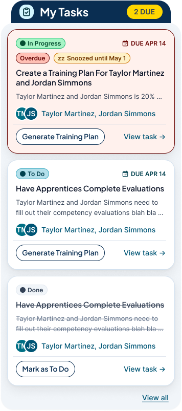
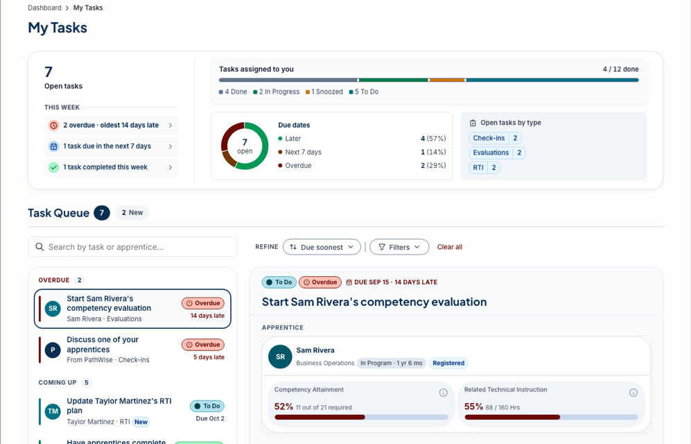

Case study 02
One task component, three surfaces
- Role
- Owned the UX and interaction design: cards, chips, filtering, states, full-page views
- Team
- Engineering owns the production build
- Timeline
- 2025 to 2026
- State
- Approved prototype; task card and notification panel in design review, Oct 2026
- Tools
- Figma · HTML prototypes on the product's component CSS


Tasks are the first thing a supervisor sees every day, so I wanted one shape they'd learn once and recognize everywhere. The part I enjoyed most came at the end: rebuilding the approved prototype on the product's real CSS, so what the team signed off on is exactly what engineering gets.
Problem
Tasks are generated by the system, in five kinds, and reach a supervisor three ways: the dashboard, a side panel and a full page. The same task has to read the same way on all three, with overdue work first, and a supervisor with a dozen apprentices has to see what's late before anything else.
What I did
- Defined one task anatomy: status chip, due date with lateness, title, the apprentice it's about, a "why this task" line, and one primary action that matches the task type.
- Made the dashboard a short list, three to five curated tasks with overdue pinned first, and the full page a queue with search, "due soonest" sort, filters, and groups for Overdue, Coming up, Snoozed and Done.
- Opened each task in a side panel with two actions, and stacked status chips in a fixed order (Snooze, Overdue, In progress) so the same situation always looks the same.
- Designed notifications as a bell-triggered panel in four categories (action required, progress and milestones, AI output ready, product and platform) instead of an inbox. Progress bars went to a later version.
- Kept status out of color alone: every chip has a word, overdue adds a date, and the reason is a sentence rather than an icon.
Result
The team approved the prototype and it became the reference for the app chrome and card style on later pages, including the job posting page. Rebuilt on the product's component CSS and markup, it matched the real components' markup state for state. As of October 2026 the task card and notification panel are in design review.

What I'd change: test snooze and undo with supervisors. The pattern has only been reviewed internally so far.